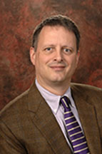

KEYNOTE SPEAKERS
William Perry Pendley
William Perry Pendley is the President and COO of the Mountain States Legal Foundation. Born and raised in Cheyenne, Wyoming, Pendley received a B.A. and M.A. degrees in Economics and Political Science from George Washington University in Washington, D.C. He received his J.D. from the University of Wyoming College of Law, where he was Senior Editor on Land and Water Law Review. During the Reagan Administration, he served as Deputy Assistant Secretary for Energy and Minerals of the Department of Interior, where he authored President Reagan’s National Minerals Policy and Exclusive Economic Zone proclamation. He has argued cases before the Supreme Court of the United States as well as various federal courts of appeals; he won what Time called a “legal earthquake” when the Supreme Court ruled in his favor in the historic Adarand (equal protection) case.
In the biggest property rights victory so far this year, Pendley successfully defended the rights of a Wyoming man, Marvin Brandt, in a challenge against an attempt by the Forest Service to build a bike trail through his property on a railroad easement that had been formally abandoned. The 8-1 decision in March was a major blow against Big Green’s ‘Rails to Trails’ movement, whereby activist groups have sought to establish public, recreational paths through private property on easements originally granted for a completely different purpose.
Paul Beard
Paul Beard is a Principal Attorney in the Pacific Legal Foundation’s Property Rights Group. As head of PLF’s Coastal Land Rights Project, he oversees litigation against coastal land-use agencies that violate landowners’ private property rights, especially the California Coastal Commission. His cases on behalf of property owners include challenges to unconstitutional conditions on land-use permits and the unlawful assertion of jurisdiction by land-use agencies over private property and its development.
In 2013, he argued and won a landmark property rights case before the United States Supreme Court: Koontz v. St Johns River Water Management District. Koontz is PLF’s seventh consecutive win before the High Court. The case establishes that land-use permit exactions – including monetary exactions and those exactions leading to permit denial – are subject to heightened scrutiny under the United States Constitution: Local, state, and federal agencies now bear the heavy burden of demonstrating that all such monetary exactions bear a sufficient connection to the alleged public harms resulting from owners’ use of their properties.
Dr. Andrew P. Morriss

Dr. Andrew P. Morriss, J.D., Ph.D, was appointed as the dean of the Texas A&M University School of Law in 2014. He is the author or coauthor of more than 60 book chapters, scholarly articles, and books. He is affiliated with a number of think tanks doing public policy work, including the Property & Environment Research Center in Bozeman, Montana, the Regulatory Studies Center at George Washington University, the Institute for Energy Research, and the Mercatus Center at George Mason University. His scholarship focuses on regulatory issues involving environmental, energy, and offshore financial centers. Over the past ten years he has regularly taught and lectured in China, Greece, Guatemala, Hong Kong, and Nepal.
Dr. Morriss’s recent scholarly work includes analysis of state eminent domain laws as they relate to growth in modern energy and communications infrastructure. In a recent working paper on the topic, Dr. Morriss and his co-authors suggest several policy alternatives that would enhance the rights of property owners facing the eminent domain process.